🚨 Your 7 Weakest Areas — Prioritize These! ▶
📋 The 3 Display Rule Types
| Rule Type | Based On | 🧠 Memory |
|---|---|---|
| Expression | Measure — Boolean expression (X > Y) | "Expr = Evaluate condition" |
| Color-Mapped Values | Category data item value | "Color = Category" |
| Gauge | Measure — interval definition (ranges) | "Gauge = Groups by Gaps" |
📋 Parameters
Expression-based: NOT affected by filters. NOT subset-based. Can set initial values.
Create step: First determine type → create → add control → use.
📋 Containers
📋 Filters & Actions
📋 Graph Builder
📋 Hidden Role & Aggregated DS
📋 Sharing & Prompts
🔴 BATCH 2: Latest Mistakes
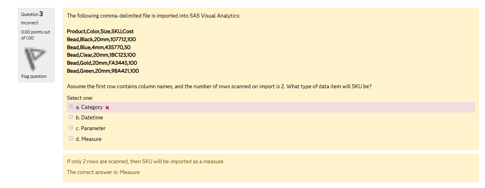
❌ Data Import: You answered "Category"✅ Correct: Measure — Only 2 rows scanned, values "107712" and "435770" appear numeric!
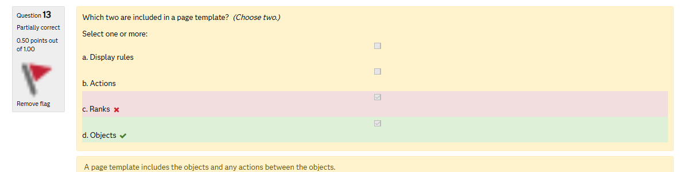
❌ Page Template: You answered "Ranks + Objects"✅ Correct: Actions + Objects
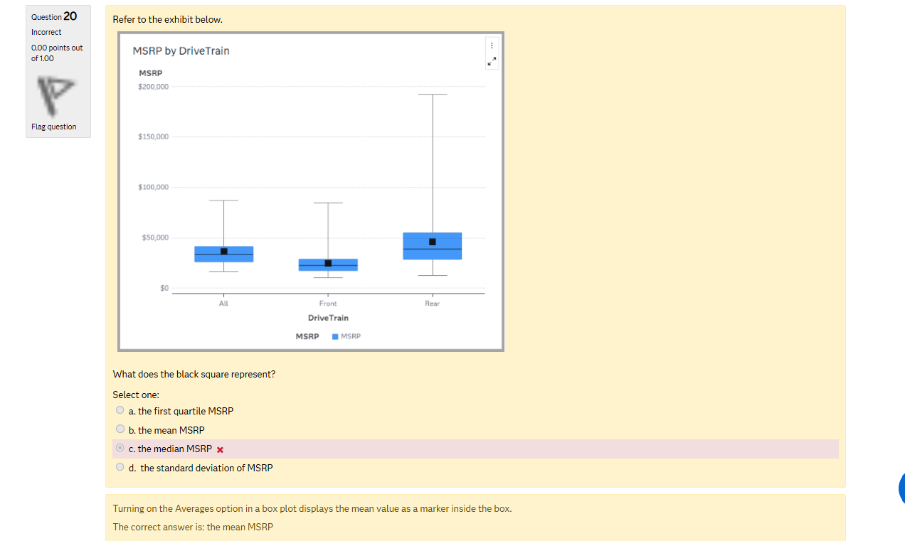
❌ Box Plot: You answered "Median"✅ Correct: Mean
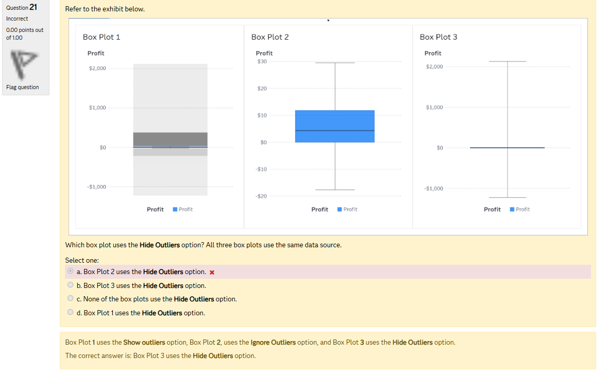
❌ Box Plot Hide Outliers: You answered "BP1"✅ Correct: BP3
 ❌ Geo Line Map: You answered "Lat/Lon"
❌ Geo Line Map: You answered "Lat/Lon"✅ Correct: Geo data provider + name/code lookup
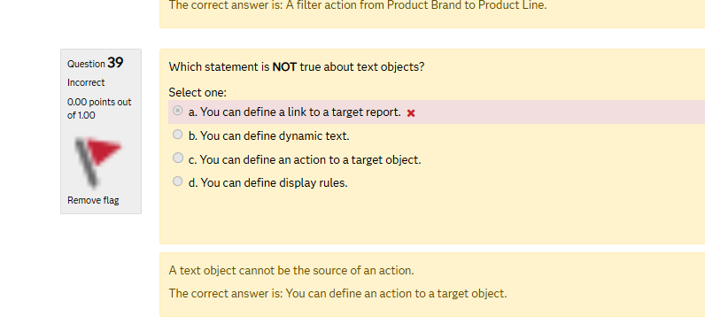
❌ Text Object: NOT true = "Cannot define actions"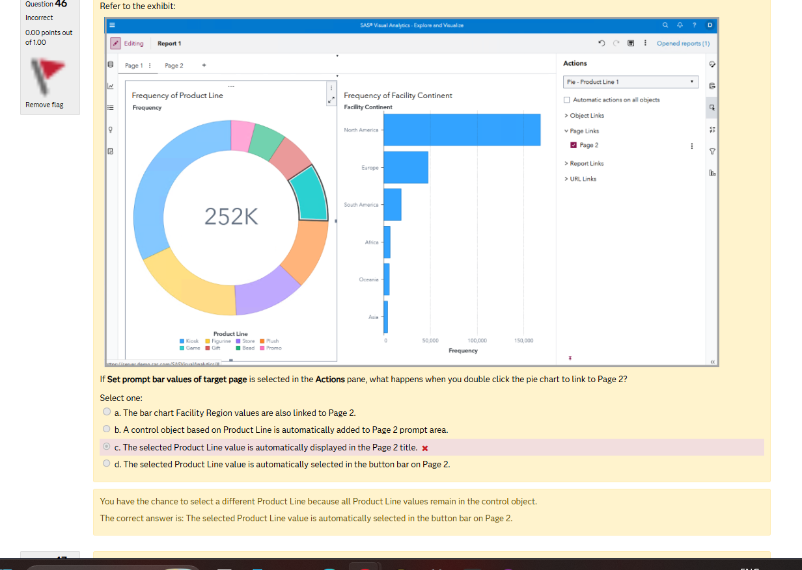
❌ Set Prompt Page: You answered "Title display"✅ Correct: Selected in button bar
🔴 BATCH 3: 9 More Mistakes (31/40 Score)
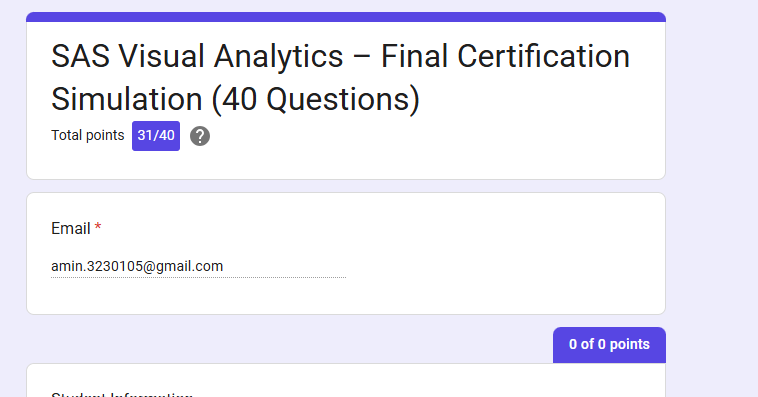
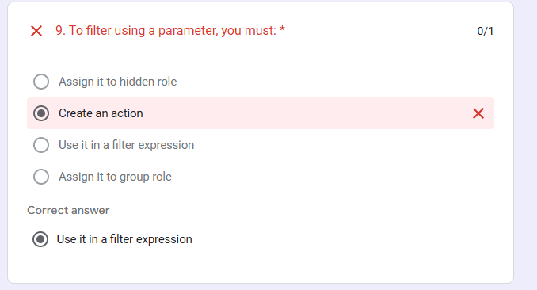
❌ Parameter Filter: You answered "Hidden role"✅ Correct: Use in filter expression
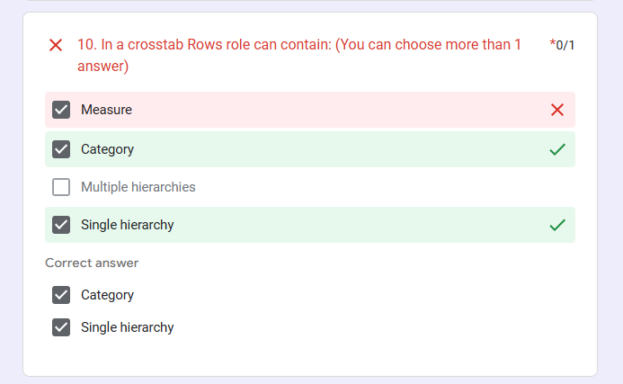
❌ Crosstab Rows: You answered "Measure + Category"✅ Correct: Category + Single Hierarchy
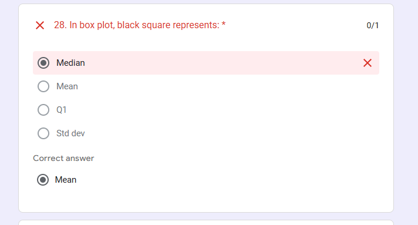
❌ Box Plot Mean: You answered "Median" (3rd time!)✅ Correct: Mean
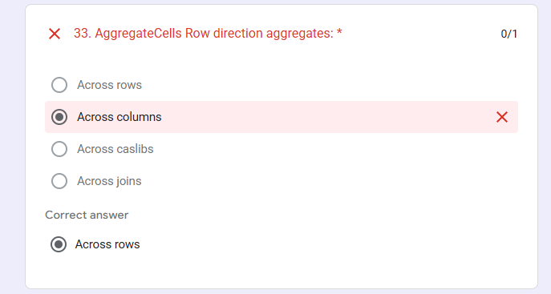
❌ AggregateCells Row: You answered "Across columns"✅ Correct: Across rows
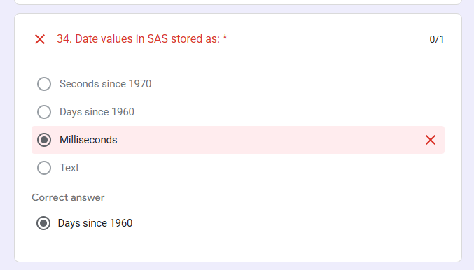
❌ SAS Date Values: You answered "Milliseconds"✅ Correct: Days since 1960
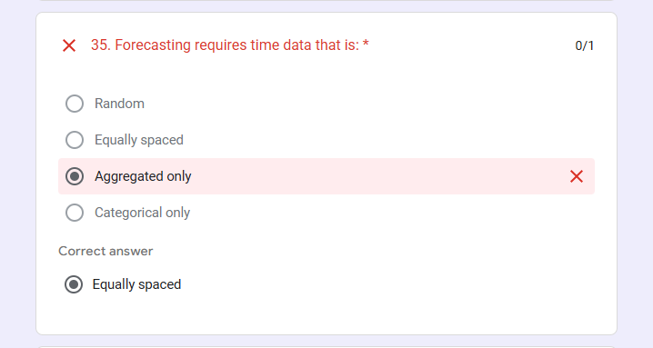
❌ Forecasting: You answered "Aggregated only"✅ Correct: Equally spaced
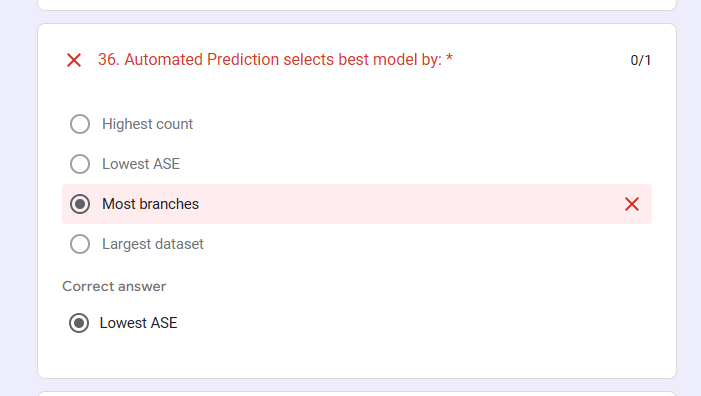
❌ Auto Prediction: You answered "Most branches"✅ Correct: Lowest ASE
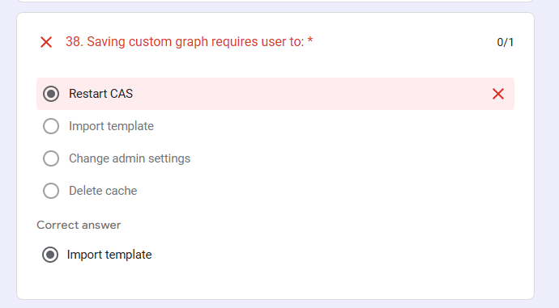
❌ Save Custom Graph: You answered "Restart CAS"✅ Correct: Import template
1. Display Rules: Color-mapped = Category | Gauge = Measure intervals | Expression = Measure Boolean
2. Levels: RTOG (Report, Table, Object, Gauge) — NOT Page/Auto/Manual
3. Character params: CAN in calc items. ❌ CANNOT in display rules
4. Expression-based params: NOT affected by filters. NOT subset-based. Can set initial values.
5. Stacking container = slide deck. Scrolling = web page.
6. Common filter = crosses pages. Advanced = multiple data items. Basic = one item.
7. Linked Selection = highlights. Page prompt = filters same-DS objects.
8. Graph Builder: Rename roles in Roles menu. Overlay shared role. Required + optional roles.
9. Hidden role: Rules, Links, Mapping. NOT for lattice rows.
10. PDF: ✅ Filters in appendix. ❌ DW HR PP excluded.
11. Box Plot: Black square = Mean. Middle line = Median.
12. Parameter filter: Use in filter expression, not hidden role.
13. Crosstab Rows: Category + Hierarchy (NOT measures).
14. SAS Dates: Days since 1960.
15. Forecasting: Needs equally spaced time data.
16. Auto Prediction: Lowest ASE = champion.
17. Save graph: Import template (no restart).
18. AggregateCells Row: Across rows (horizontal).
🔴 BATCH 4: Final Mistakes
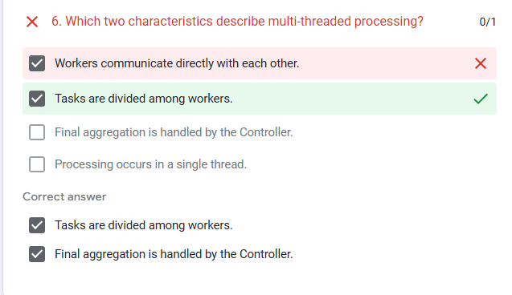
❌ Multi-threaded Processing: You answered "Workers communicate directly"✅ Correct: Tasks divided among workers + Final aggregation by Controller
Workers do NOT communicate directly — the Controller manages all work distribution and aggregation.
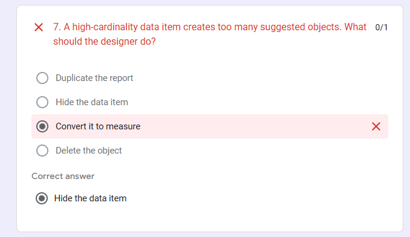
❌ High Cardinality: You answered "Convert to measure"✅ Correct: Hide the data item — Too many unique values → hide it to reduce suggested objects.
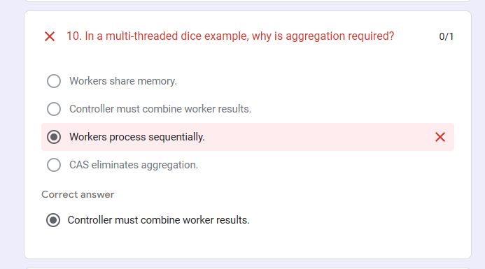
❌ Why aggregation in multi-threaded dice? You answered "Workers process sequentially"✅ Correct: Controller must combine worker results — Workers run IN PARALLEL, not sequentially. Controller aggregates results.
- Workers = divide tasks, run in PARALLEL ❌ NOT sequential
- Controller = distributes tasks, combines results (aggregation)
- Workers do NOT communicate directly — everything goes through Controller
- High cardinality = too many unique values → Hide the data item (not convert to measure)
🔴 BATCH 5: Mobile Discovery Mode
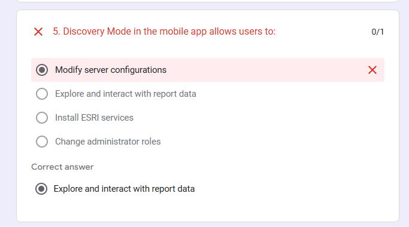
❌ Discovery Mode: You answered "Modify server configurations"✅ Correct: Explore and interact with report data
Discovery Mode is for browsing/exploring data on mobile, NOT modifying server settings!
🔴 LESSON 4: 10 Mistakes (Data Refinement)
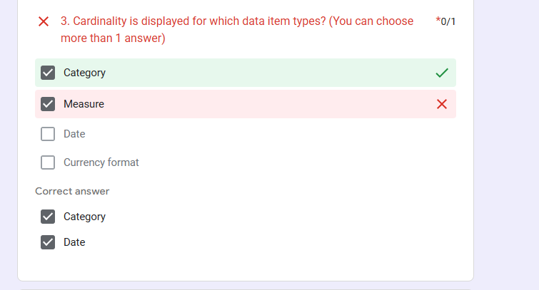
❌ Cardinality displayed for: You said Category + Measure✅ Correct: Category + Date — Cardinality (unique value count) is shown for categories and dates, NOT measures.
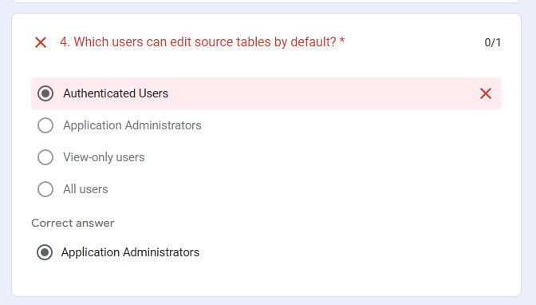
❌ Who can edit source tables by default? You said Authenticated Users✅ Correct: Application Administrators
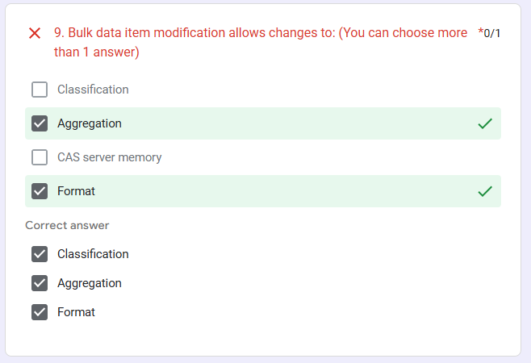
❌ Bulk data item modification allows: You said Classification + CAS memory✅ Correct: Classification, Aggregation, Format — NOT CAS server memory.
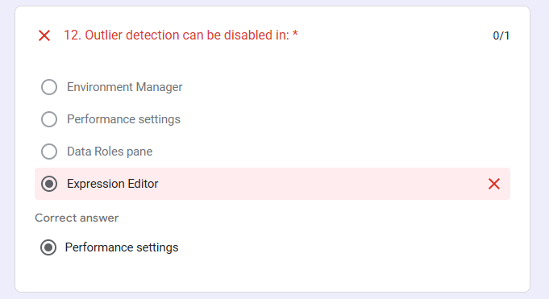
❌ Outlier detection disabled in: You said Expression Editor✅ Correct: Performance settings
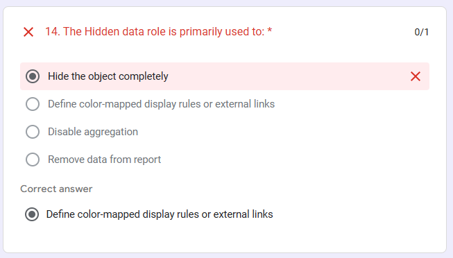
❌ Hidden data role used for: You said Hide the object✅ Correct: Define color-mapped display rules or external links
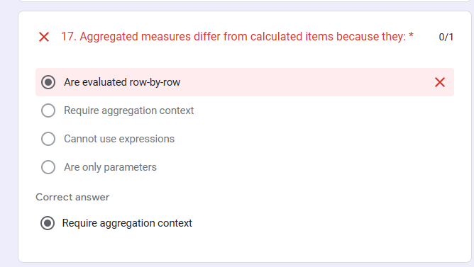
❌ Aggregated measures differ because they: You said Row-by-row evaluation✅ Correct: Require aggregation context — Calc items = row-by-row. Agg measures = need grouping context.
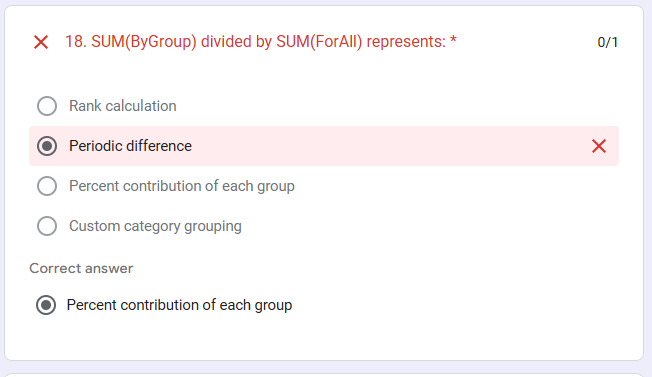
❌ SUM(ByGroup) / SUM(ForAll) = ? You said Periodic difference✅ Correct: Percent contribution of each group — ByGroup = group total. ForAll = grand total. Division = %.
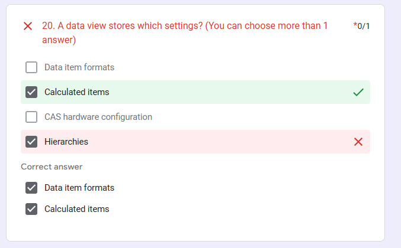
❌ Data view stores: You said Hierarchies✅ Correct: Data item formats + Calculated items — NOT hierarchies.
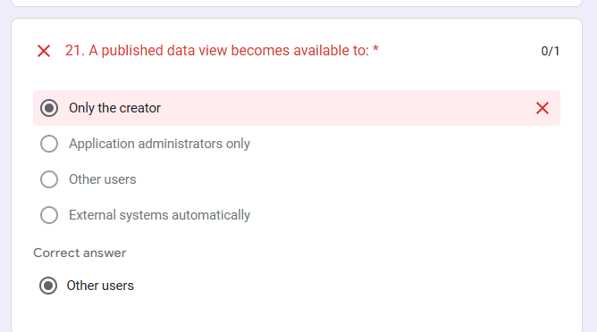
❌ Published data view available to: You said Only the creator✅ Correct: Other users — Publishing = sharing with others.
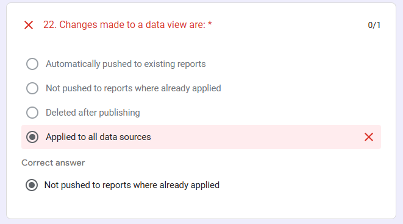
❌ Changes to data view are: You said Applied to all data sources✅ Correct: Not pushed to reports where already applied — Existing reports keep using the original version.
- Cardinality: Category + Date (NOT measures)
- Bulk modify: CAF = Classification, Aggregation, Format
- Hidden role: for rules + links, NOT for hiding objects
- Aggregated measures = need aggregation context (not row-by-row)
- SUM(ByGroup)/SUM(ForAll) = percent contribution
- Data view stores: formats + calculated items (NOT hierarchies)
- Published data view = available to other users
- Changes to data view = NOT pushed to existing reports
🔴 LESSON 5: 8 Mistakes (Score 22/30)
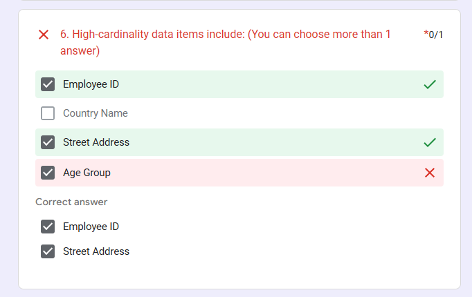
❌ High-cardinality data items: You said Country Name + Age Group✅ Correct: Employee ID + Street Address — High cardinality = many unique values. Employee ID (unique per person) and Street Address (many different addresses) have high cardinality. Country Name has few. Age Group has very few.
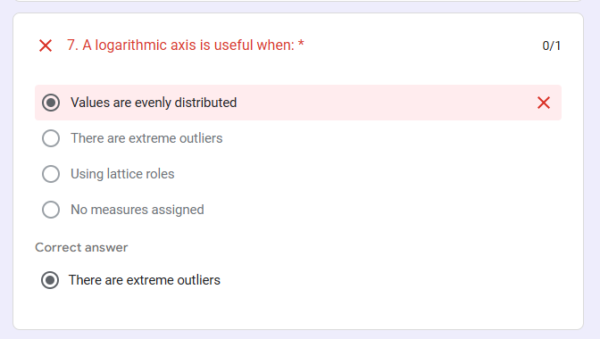
❌ Logarithmic axis useful when: You said Values are evenly distributed✅ Correct: There are extreme outliers — Log scale compresses the range so outliers don't dominate the visualization.
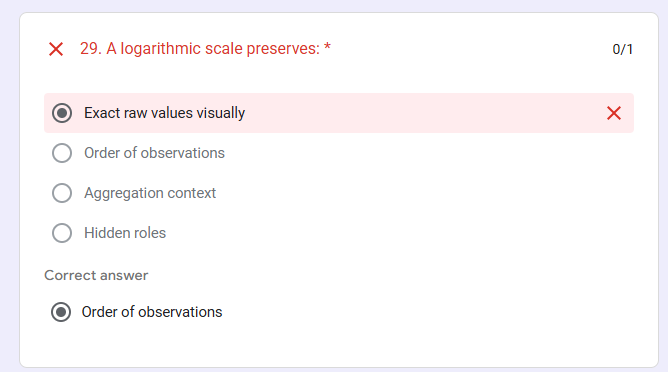
❌ Log scale preserves: You said Exact raw values visually✅ Correct: Order of observations — Log scale preserves ranking/ordering, not exact values. 10→100→1000 looks equally spaced on log scale.
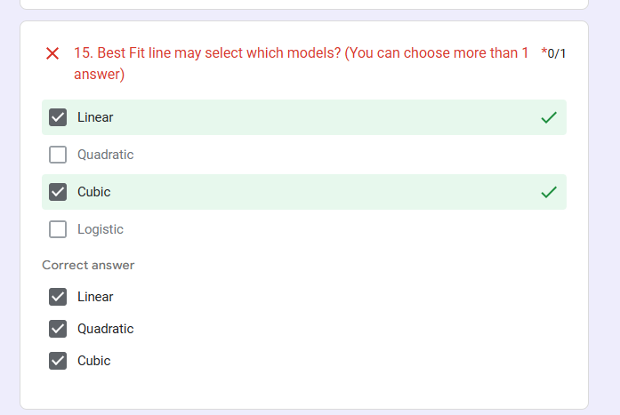
❌ Best Fit line models: You said Linear + Cubic✅ Correct: Linear + Quadratic + P-Spline — NOT cubic. Available: Linear, Quadratic, P-Spline (Penalized B-Spline).
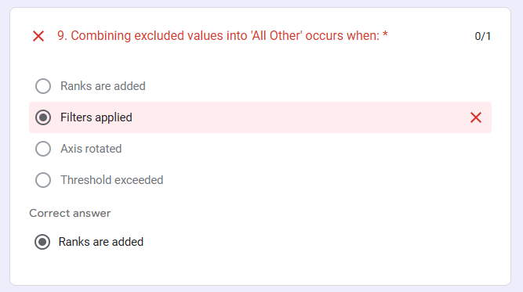
❌ "All Other" grouping occurs when: You said Filters applied✅ Correct: Ranks are added — When you show Top N items, the rest are grouped into "All Other".
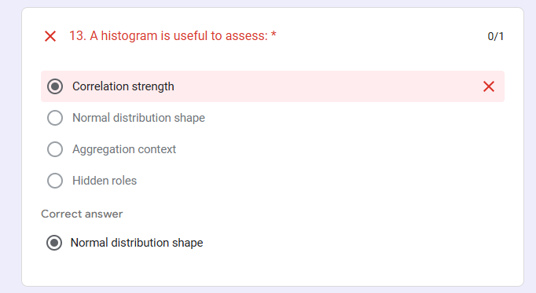
❌ Histogram assesses: You said Correlation strength✅ Correct: Normal distribution shape — Histogram shows frequency distribution. Correlation = scatter plot.
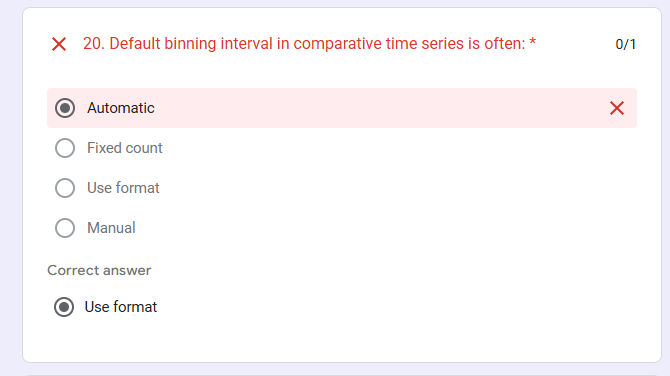
❌ Default binning in comparative time series: You said Automatic✅ Correct: Use format — The format of the time data (e.g., Year, Month) determines the binning interval.
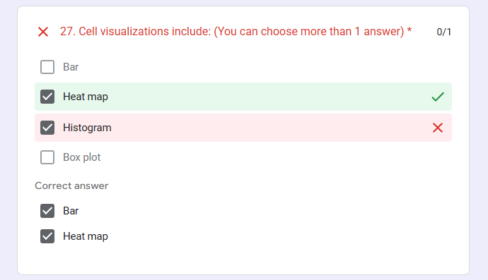
❌ Cell visualizations include: You said Heat map + Histogram✅ Correct: Bar + Heat map — Histogram is NOT a cell visualization.
📖 IN-DEPTH: Logarithmic Scale
Instead of marking numbers evenly (1, 2, 3, 4...), a log scale marks powers of 10 (1, 10, 100, 1000, 10000...). The distance from 1→10 equals the distance from 10→100 equals the distance from 100→1000.
Why use it? When data has extreme outliers — e.g., most salaries are 30k-200k but CEO makes 50 million. On a normal scale the CEO bar fills the page and everyone else looks tiny. On a log scale, 30k and 50M can both be seen clearly.
What does it preserve? Order of observations (ranking) — bigger values still appear higher. It does NOT preserve exact visual proportions — 1000 is NOT drawn 10x bigger than 100, they're the same distance apart.
🧠 Memory: "Log = Large gaps. Use when Lopsided data. Preserves Order, not Original values."
📖 IN-DEPTH: P-Spline vs Linear vs Quadratic
1. Linear — The line is a STRAIGHT line. Y = a + bX. Simple, interpretable. Use when relationship is consistently increasing or decreasing (e.g., age → salary).
🧠 "Linear = Line. A straight ruler 📏."
2. Quadratic — The line curves once (U-shape or ∩-shape). Y = a + bX + cX². Use when there's a peak or valley (e.g., age → happiness: low in 20s, high in 40s, low in 70s).
🧠 "Quadratic = Quarter turn (one bend) 🔄."
3. P-Spline (Penalized B-Spline) — The line can wiggle multiple times to follow complex patterns. It's a flexible, data-driven curve. Use when the relationship is complicated and you don't want to force it into a simple shape.
🧠 "P-Spline = Pretzel 🥨 — it bends many times to follow the data. 'Penalized' means it's punished for over-complicating (avoids overfitting)."
❌ Why NOT Cubic? Cubic (X³) is NOT a standard option in SAS VA's Best Fit line. The choices are Linear, Quadratic, and P-Spline only.
🧠 Memory: "Line = straight. Quad = one bend. P-Spline = many bends. Cubic = Cut (not available)."
🔴 LESSON 6: 7 Mistakes (Score 23/30)
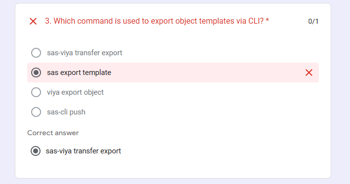
❌ CLI command to export object templates: You said "sas export template"✅ Correct: sas-viya transfer export — The transfer plug-in is used for exporting/importing content via CLI.
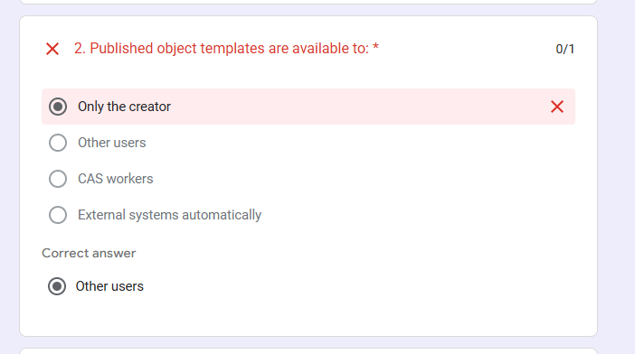
❌ Published object templates available to: You said "Only the creator"✅ Correct: Other users — Publishing = sharing with others, not just the creator.
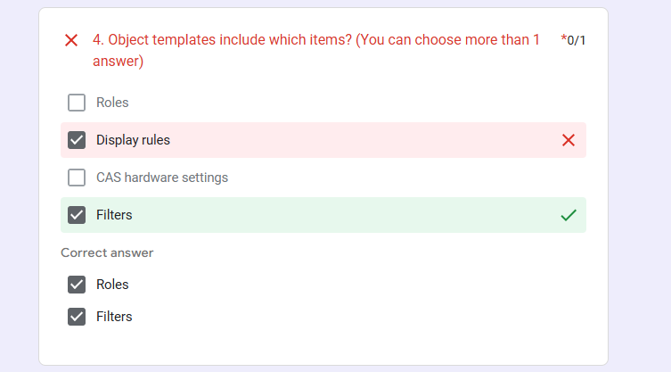
❌ Object templates include: You said "Display rules + Filters"✅ Correct: Roles + Filters — Templates store role assignments and filters, not display rules.
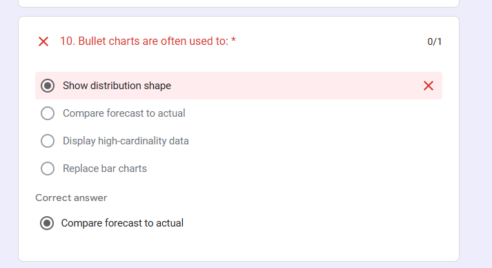
❌ Bullet charts used for: You said "Show distribution shape"✅ Correct: Compare forecast to actual — Bullet chart = target vs actual performance. Histogram = distribution shape.
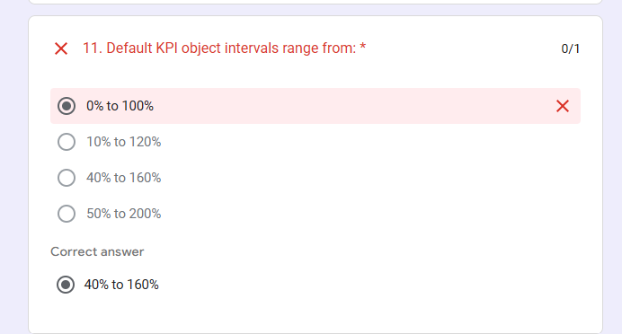
❌ Default KPI intervals: You said "0% to 100%"✅ Correct: 40% to 160% — KPI measures performance relative to target. Below 40% = bad, above 160% = excellent.
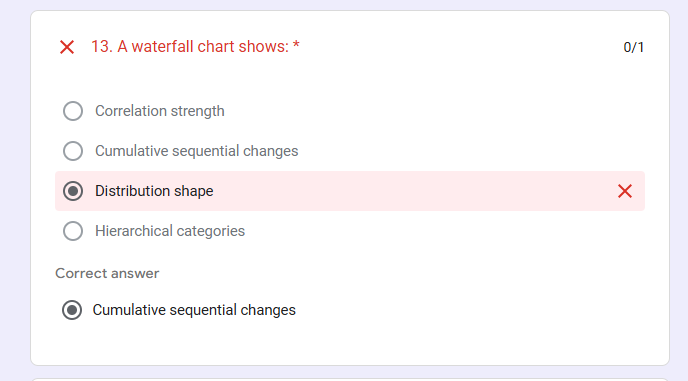
❌ Waterfall chart shows: You said "Distribution shape"✅ Correct: Cumulative sequential changes — Waterfall = running total with additions/subtractions. Distribution = histogram.
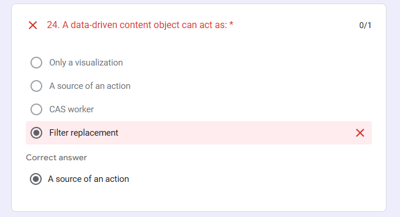
❌ Data-driven content can act as: You said "Filter replacement"✅ Correct: A source of an action — Data-driven objects can trigger actions (linked selection, filtering).
- Bullet chart = compare to target (like a gauge) 🎯
- Waterfall = cumulative changes (add/subtract steps) 🌊
- Histogram = distribution shape 📊
- KPI intervals = 40% to 160% (not 0-100%)
- Data-driven content = can be action source (not filter replacement)
- Object templates = Roles + Filters (not display rules)
- CLI export:
sas-viya transfer export (not "sas export template")
🔴 LESSON 7: 4 Mistakes (Score 16/20)
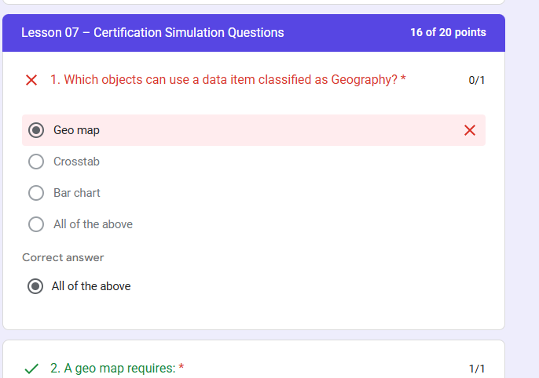
❌ Objects that can use Geography data: You said "Geo map only"✅ Correct: All of the above — Geo map, Crosstab, Bar chart ALL can use geography-classified data items. Geography is a data item classification, not an object type restriction.
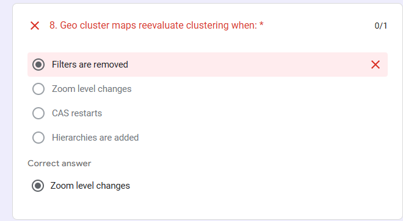
❌ Geo cluster maps reevaluate when: You said "Filters are removed"✅ Correct: Zoom level changes — Clusters recalculate as you zoom in/out to show more/fewer points per cluster.
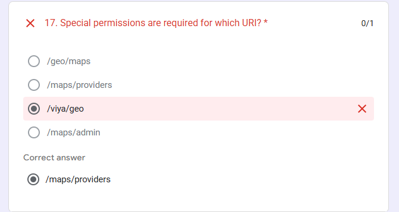
❌ Special permissions required for URI: You said "/viya/geo"✅ Correct: /maps/providers — The maps providers endpoint requires special permissions.
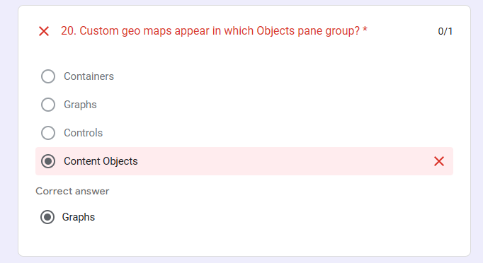
❌ Custom geo maps appear in: You said "Content Objects"✅ Correct: Graphs group — Custom geo maps are grouped under Graphs in the Objects pane.
- Geography data = can be used by ALL objects (not just geo maps)
- Geo cluster = reevaluates on zoom change 🔍
- Permissions needed for: /maps/providers URI
- Custom geo maps = Graphs group (not Content Objects)
- Viya/Geo = ❌ | Maps/Providers = ✅ (MP = Must have Permissions)
🔴 LESSON 8: 2 Mistakes
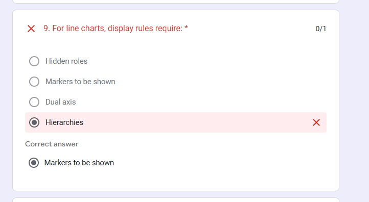
❌ Line charts display rules require: You said "Markers to be shown"✅ Correct: Hierarchies — Line charts need a hierarchy (e.g., Year > Quarter > Month) for display rules to work properly on the line elements.
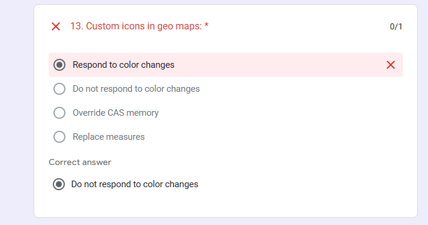
❌ Custom icons in geo maps: You said "Respond to color changes"✅ Correct: Do not respond to color changes — Custom icons are static images. They don't change color when display rules are applied.
- Line chart display rules = need Hierarchies (not just markers)
- Custom geo icons = static — do NOT respond to color changes 🖼️
- For color changes on geo maps, use built-in markers/shapes, not custom icons
🔴 LESSON 9: 2 Mistakes (Score 16/20)
✅ Correct: Change object types — Comprehensive edits = viewers can change object types, add data labels, sorting. Publishing = designer/owner only.
✅ Correct: In any order — One-way filters are independent; each one simply filters the downstream objects regardless of order.
1. Comprehensive edits (highest) = change object types, sorting, labels, legends
2. Data edits = change data assignments, filters, ranks
3. No edits = view only
- Viewers can NOT publish reports (that's for designers/owners)
- One-way filters: any order works ✅
🔴 LESSON 10: 6 Mistakes (Best Practices)
✅ Correct: Meaningful page titles + Clear data story — An ugly report lacks purpose and narrative. Not just formatting.
✅ Correct: Level of detail + Customization level — Knowing your audience tells you how much detail and how much customization to give them.
✅ Correct: Treemap — SAS recommends treemap over pie chart for part-to-whole. Treemaps handle more categories without clutter.
✅ Correct: Accessibility — Users with color-deficient vision may not distinguish colors. Always check contrast.
✅ Correct: Internal diagnostic tool for query run-time — This is a developer shortcut, not the Report Review panel.
✅ Correct: Peer review + Testing on multiple devices — Testing = human review + cross-device checking.
- Ugly report lacks: story + titles (NOT just fonts)
- Audience determines: level of detail + customization (NOT chart types)
- Part-to-whole = Treemap preferred over Pie 🥧→🟦
- Color rules → Accessibility concern (not data)
- Ctrl+Alt+Q = query diagnostic tool (not Report Review)
- Testing = peer review + multiple devices (not CAS memory)
🔴 ADVANCED L1: 4 Mistakes (Score 14/18)
✅ Correct: Equally spaced over time — Forecasting needs regular intervals. Repeat offender!
✅ Correct: Frequency or weight of the path — Wider link = more flow through that path.
✅ Correct: Negative=0, Neutral=0.5 — SAS sentiment scoring uses 0-1 scale: Negative=0, Neutral=0.5, Positive=1.
✅ Correct: Not added as underlying factors — Aggregated measures are NOT used as underlying factors in Automated Explanation.
- Forecasting: equally spaced (not random/aggregated)
- Sankey link width = frequency/weight (not sentiment)
- Sentiment scoring: Negative=0, Neutral=0.5, Positive=1 (0-1 scale)
- Aggregated measures = NOT underlying factors in Auto Explain
🔴 ADVANCED L2: 3 Mistakes (Score 17/20)
✅ Correct: CASUSER — Join results go to the user's personal CAS library (CASUSER), not temp.
✅ Correct: Only two tables at once + Only simple matching supported — Self-joins are NOT a join limitation in SAS VA.
✅ Correct: Aggregated measures — Aggregated functions CAN accept categories as grouping. They CANNOT accept other aggregated measures (no nesting).
- Join results → CASUSER (not temp)
- Join limits = 2 tables at once + simple matching (self-joins OK)
- Aggregated functions ❌ accept other aggregated measures (no nesting)
- Aggregated functions ✅ CAN accept categories
🔴 ADVANCED L4: 1 Mistake
✅ Correct: Additional roles can be added or modified — In Graph Builder, each object has required roles AND you can add/modify additional optional roles.
🔴 ADVANCED L5: 2 Mistakes (Score 6/8)
✅ Correct: User can log in as Guest and open the report — That's the whole point of Guest Access! Anonymous read-only access.
✅ Correct: Include missing values — Counterintuitive! SAS DistinctCount counts NULL/missing as a distinct value by default.
- Guest Access = lets anonymous users log in and view reports 🔓
- DistinctCount = includes missing values by default (surprising!)
- 🧠 Trick: "DistinctCount = Counts Differently — includes Default missing values too"
🎯 AUTO CHART SELECTION GUIDE
1 item → Measure=Histogram 📊 | Category=Bar chart
2 measures → Scatter 🔵 | 3 measures → Bubble 🫧
Cat + Measure → Bar (always!)
Date + Measure → Time Series 📈
Geo + Measure → Geo Map 🗺️
🎵 "One measure's a Histo-gram, Category needs a Bar. Two measures? Scatter plot! Three? Bubble hits the spot!"